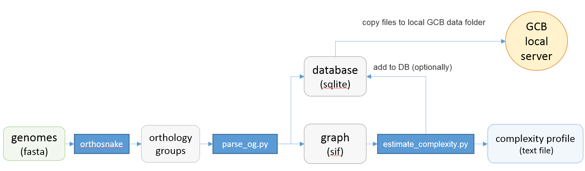

Standalone version¶
Roadmap¶
Standalone version should be used when the user wants to work with a custom set of genomes. Command-line scripts are provided to: calculate complexity profile, generate subgraphs, generate a database which can be imported to browser-based GUI application. Scheme of actions and scripts is shown below.
Command-line tools¶
Prerequisites¶
Orthogroup inference¶
Orthogroup inference is the first step in the standalone analysis. We recomend using our orthosnake pipeline for inference of orthogroups, because GCB requires some special formating of the files.
Orthosnake pipeline INPUT: Fasta-formated files with .fna extension, one file per genome
OUTPUT: orthogroups file `Orthogroups.txt` in OrthoFinder format
Steps:
Clone or download orthosnake GIT repository: https://github.com/paraslonic/orthosnake
Put fasta-formated genome files in
fnafolder of the orthosnake folder.Rut snakemake with
--use-condaand other appropriate options
The following code will run the test dataset analysis
git clone https://github.com/paraslonic/orthosnake.git
cd orthosnake
cp test_fna/* fna # copy test fasta files with three plasmids
snakemake -j 4 --use-conda
Here, we used snakemake with parameters specifying the number of available cores (-j 4), and using conda environments (--use-conda). During the first start of the pipeline, it will take several minutes to install the necessary programs into the conda environments.
If genome files have extension, other than .fna (e.g., *.fasta) , please rename them. For example, to change the file extension from .fasta to .fna, run:
for i in fna/*.fasta; do mv $i fna/$(basename $i .fasta).fna; done
Orthosnake pipeline performs the following steps:
- Fasta headers are modified, to satisfy the requirement of the Prokka:
symbols other than alphanumericals and _ are converted to _
if header is longer than 20 symbols, it is cropped to the first 18 symbols, and dots are added to the end (e.g.,
gi|15829254|ref|NC_002695.1becomesgi|15829254|ref|NC..)Annotation with Prokka
Genebank files converted to amino acid fasta files, with location and product information in headers.
Orthogroups are inferred with OrthoFinder.
Building a graph¶
INPUT: orthogroups file `Orthogroups.txt` in OrthoFinder format
OUTPUT: graph-based representation of genomes (sif-file and sqlite database)
Graph structure is stored in a sif-formatted text file and in a sqlite database file. Sif-formated text file is needed for furher command-line analysis steps. Sqlite database is needed for subsequent export to the local gcb server.
To build a graph, run:
python3 parse_og.py -i [path to txt file with orthogroups] -o [path and name prefix for output files]
For example:
python3 parse_og.py -i Results/Orthogroups.txt -o graph
Main output files are:
graph.sif- graph in a sif format.
graph.db- SQLite database conatining graph.
Additional files for optional user analysis:
graph_context.sif- number of unique contexts for each gene.
graph_genes.sif- genes (nodes) from all genomes, with coordinates and Prokka annotations.
In a text graph.sif file, each line describes one edge, with its source and target nodes, genome id and contig id, to which this edge belongs. SQLite database graph.db file contains same information, and can be supplemented with complexity values in the course of further analysis.
To generate a subgraph in a sif-format, run following command:
python generate_subgraph.py -i graph.sif -o subgraph --reference [name of reference genome] --start [name of start node] --end [name of end node]
This command generates subgraph subgraph.sif.
Additional parameters: * ` –window ` - number of nodes, added to left and right side of refernce chain (default 20) * ` –depth ` - maximum length of deviating paths, which will be added to the subgraph {default is the length of the reference chain) * ` –tails ` - if deviating path too long, it will be replaced by left and right “tails”. This parameter is tails length (default 5) * ` –names_list ` - path to file with list of names for subgraph generating (default all names from *.sif will be used)
To plot th
python plot_subgraph.py -i subgraph.sif -o subgrah_img
This script generate: * subgraph_img.ps file as image and * subgraph_img.dot file with DOT description of subgraph (DOT is popular graph structure description language)
Additional parameters: * ` –freq_min` - minimal edge frequency to draw. Edge frequency is number of genomes with this edge. * ` –da` - legacy parameter, it’s not recommended to use. Draws all subgraph edges in any case, but edges wih frequency < freq_min do not influence to subgraph layout.
Complexity estimation¶
The next step is the computing of genome complexity. To do this type in terminal:
python3 start_computing.py -i graph.sif -o [path to output folder] --reference [name of reference genome]
- Additional parameters:
–window - sliding window size (default 20)
–iterations - number of iterations in probabilistic method (default 500)
–genomes_list - path to file with a list of names which will be used to create a graph (default all strains from *.sif will be used)
–min_depth, –max_depth - minimum and maximum depth of generated paths in the graph (default from 0 to inf)
–save_db - path to the database, created by orthfinder_parse.py (default data will not be saved to db, only to txt). It’s necessary to use this parameter if you want to use this complexity profile in the stand-alone browser-based GCB application.
Output files for each contig in the reference genome:
all_bridges_contig_n.txt- this file contains information about the number of deviating paths between each pair of nodes in the reference genome
Building a graph and complexity estimation with a single command¶
gg.py
PODVAL¶
Then gene annotation with prokka tool of each genome is performed. Genbank files then converted to fasta formatted amino acid protein sequences with a custom python3 script. This script inserts special information about genes in fasta headers, namely: genome file name, numeric id, product name, contig, start, end (for example, >GCF_000007445|4|Threonine_synthase|NC_004431.1|4445|5731). Then these files are used to infer orthology groups with OrthoFinder tool. The resulting file with orthology groups (OG) contains information about each OG in the following format: <og id>: <gene1> <gene2> …
For example:
OG0008594: GCF_001618325|2406|Small_toxic_polypeptide_LdrD|NZ_CP015069.1|2607133|2607240 GCF_001663475|366|Small_toxic_polypeptide_LdrD|NZ_CP015159.1|380042|380149